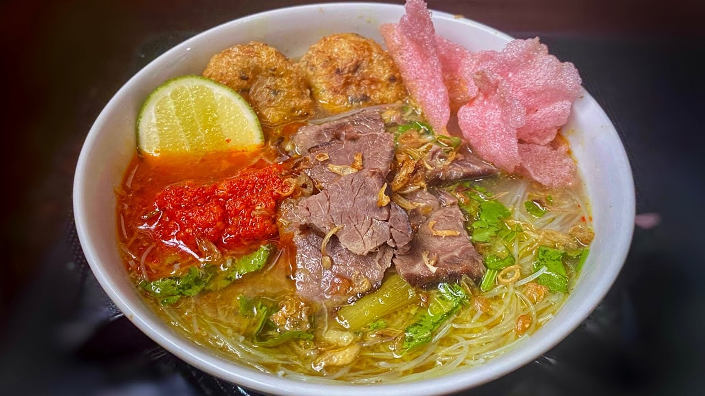

Soto Padang
Soto padang (Jawi: سوتو ڤادڠ) adalah hidangan berkuah kaldu sapi dengan bahan irisan daging sapi yang sudah digoreng kering, bihun, ditambah perkedel kentang dan dihidangkan panas-panas. Hidangan ini berasal dari kota Padang, Sumatera Barat. Selain di kota Padang, Sumatera Barat, hidangan soto padang juga mudah ditemukan di berbagai restoran Padang di penjuru dunia.
Di kota Padang, soto ini sering dihidangkan untuk sarapan, dan terkadang disajikan bersama teh talua.
📍lokasi:

Rendang
Rendang (bahasa Minangkabau: randang; Jawi: رندڠ) adalah hidangan lauk pauk yang berasal Minangkabau, Indonesia dengan bahan dasar daging. (ayam, bebek, telur,rusa, sapi, kerbau, dan lainnya) Yang melalui proses memasak dengan suhu rendah dalam waktu lama dengan menggunakan aneka rempah-rempah dan santan. Hidangan ini terlahir akibat perilaku sedari lampau suku Minangkabau yang gemar merantau ke sana kemari sehingga butuh banyak perbekalan, terutama hidangan yang awet, tahan lama, dan bercita rasa sesuai lidah asli orang Minang. Awalnya menggunakan daging rusa. Namun, karena rusa mulai sulit didapat, bahan dasarnya beralih menjadi daging sapi atau kerbau.
📍lokasi:

Sate Padang
Sate Padang adalah sebutan untuk tiga jenis varian sate di Sumatera Barat, yaitu Sate Padang, Sate Padang Panjang, dan Sate Pariaman. Namun karena adanya ekslusivitas istilah makanan, istilah sate Padang tidak digunakan di Sumatera Barat yang hanya merujuk pada sate daging, lidah, dan jeroan; sedangkan istilah ini hanya digunakan di luar Sumatera Barat.
📍lokasi: